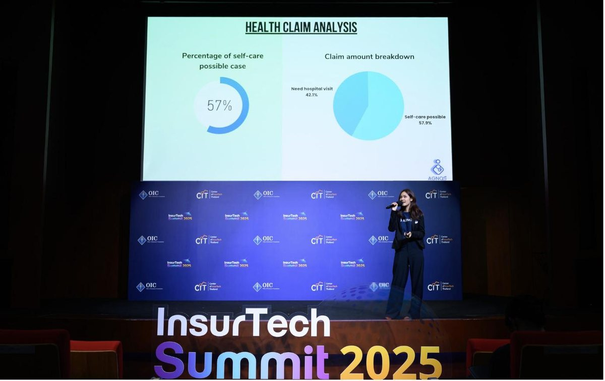

งานอื่นๆ
Newsroom & PR
สี่ปีแห่งการบอกเล่าเรื่องราวขององค์กร
Agnos Health · Communications · Public Relations · Media Relations

ขึ้นเวที InsurTech Summit 2025 (OIC × CIT) ในฐานะตัวแทนแบรนด์ Agnos Health
RoleCommunications · PR · Media Relations · Stage Representation
ช่องทางNewsroom บริษัท · สื่อภายนอก · เวทีอุตสาหกรรม
ช่วงเวลา2022 – 2026 (ต่อเนื่อง 4 ปี)
บทบาทและความเป็นเจ้าของงาน
- บริหารจัดการห้องข่าวของบริษัท (Company Newsroom) แบบคนเดียวตั้งแต่ต้นจนจบ
- วางแผนและกระจายข่าวสารไปยังสื่อภายนอก เพื่อสร้างการรับรู้และตอกย้ำภาพลักษณ์แบรนด์ผ่านสำนักข่าวหลากหลายสำนัก
- เป็นตัวแทนบริษัทขึ้นบรรยายบนเวทีอุตสาหกรรมและโครงการระดับประเทศ
- ควบคุมการผลิตสื่อสนับสนุนสำหรับข่าวและงานประชาสัมพันธ์ทุกชิ้นให้สอดคล้องกับทิศทางแบรนด์
โจทย์
ในฐานะสตาร์ทอัพด้านเทคโนโลยีสุขภาพ Agnos มีความเคลื่อนไหวและเหตุการณ์สำคัญเกิดขึ้นตลอดเวลา — การขึ้นเวทีเสวนา
การได้รับรางวัล การจับมือพาร์ทเนอร์กับโรงพยาบาล ไปจนถึงการเปิดตัวผลิตภัณฑ์ใหม่ แต่ความสำเร็จเหล่านี้จะไม่มีความหมายต่อแบรนด์เลย
หากไม่มีการบอกเล่าออกไปให้ถูกคน ในจังหวะที่ถูกต้อง และด้วยความสม่ำเสมอ
โจทย์คือ "การเปลี่ยนทุกหมุดหมายสำคัญของบริษัท (Milestones) ให้กลายเป็นกระแสที่โลกภายนอกรับรู้ พร้อมสร้างความไว้วางใจในระยะยาว"
โดยไม่ปล่อยให้ข่าวสารที่ดีต้องเงียบหายไปตามกาลเวลา
แนวทาง
ฉันเลือกใช้แนวทาง "การสร้างความน่าเชื่อถือผ่านความสม่ำเสมอและการเล่าเรื่องเชิงคุณค่า (Consistency & Narrative Control)"
เหตุผลเบื้องหลัง: ในโลกของ Corporate Communications พาดหัวข่าวใหญ่แค่ครั้งเดียวไม่สามารถสร้างความน่าเชื่อถือถาวรได้
ความไว้วางใจเกิดจากการสะสมเรื่องราวความสำเร็จอย่างต่อเนื่องหลายปี งาน PR ในมุมมองของฉันจึงไม่ใช่แค่การ "ประกาศว่ามีอะไรเกิดขึ้น"
แต่คือการเลือกหยิบเรื่องราวที่มีนัยสำคัญมาเรียบเรียงด้วยน้ำเสียงที่ถูกต้อง เพื่อตอกย้ำ positioning ของแบรนด์ในทุก touchpoint
สิ่งที่สร้างและลงมือทำ
01 Single-Handed Company Newsroom Operations
รับผิดชอบการดำเนินงาน Newsroom ของบริษัทด้วยตัวเอง เขียนและเผยแพร่บทความข่าวองค์กรมากกว่า 50+ ชิ้นต่อเนื่องตลอด 4 ปี ครอบคลุมตั้งแต่เวทีเสวนา รางวัล พาร์ทเนอร์ ไปจนถึงนวัตกรรมผลิตภัณฑ์
02 Strategic Media Relations & Earned Media
วางแผนกระจายข่าวไปยังสื่อภายนอก จนเกิด Earned Media กว่า 20+ สำนัก ครอบคลุมสื่อธุรกิจชั้นนำ (ฐานเศรษฐกิจ, กรุงเทพธุรกิจ, Marketeer), สื่อเทคโนโลยี (Techsauce) และสื่อไลฟ์สไตล์
03 Industry Thought Leadership & Stage Representation
เป็นตัวแทนองค์กรขึ้นบรรยายและแชร์วิสัยทัศน์บนเวทีสำคัญ เช่น InsurTech Summit 2025 และโครงการ NIA HealthTech/MedTech Sandbox & Incubation Program 2025
ขอบเขตผลงานและตัวเลขจริง
ครอบคลุมตั้งแต่เวทีในประเทศ เวทีต่างประเทศ (ฮ่องกง เกาหลี) รายการโทรทัศน์ระดับประเทศ (Shark Tank, Win Win WAR)
รางวัลและโครงการ accelerator รวมถึงพาร์ทเนอร์ระดับภาครัฐ (ทำเนียบรัฐบาล, กทม., เทศบาลนครยะลา) และเครือข่ายโรงพยาบาลชั้นนำ
บทสรุปภาพรวม
งาน PR ไม่มี "วันเปิดตัว" ที่ชี้ผลได้ในวันเดียว ผลของมันคือดอกเบี้ยทบต้นจากการเขียนข่าวชิ้นที่ 50
ด้วยมาตรฐานเดียวกับชิ้นแรก สี่ปีที่ดูแล newsroom คนเดียวจึงวัดกันที่ความสม่ำเสมอและการรักษา brand voice
ไม่ใช่พาดหัวใหญ่เพียงครั้งเดียว
สิ่งที่ได้เรียนรู้
- Consistency Compounds Credibility: ความสม่ำเสมอตลอด 4 ปีสร้างความน่าเชื่อถือให้แบรนด์มากกว่าพาดหัวข่าวใหญ่ที่ดังชั่วข้ามคืนแล้วหายไป
- PR คือการ Curate ไม่ใช่แค่ประกาศ: งาน PR ที่ดีไม่ใช่การบอกทุกอย่าง แต่คือการเลือกเล่าเฉพาะเหตุการณ์ที่ทรงพลังที่สุด ให้ถูกกลุ่มที่สุด ด้วยน้ำเสียงที่ใช่ที่สุด
- Founder & Brand Voice Alignment: การที่นักสื่อสารขึ้นพูดบนเวทีอุตสาหกรรมได้ด้วยตัวเอง ช่วยยกระดับความเชื่อมั่นและสร้างตัวตนที่จับต้องได้ให้สตาร์ทอัพ
ดู Newsroom ที่เขียนไว้ →
Other Work
Newsroom & PR
Four Years of Telling the Company's Story
Agnos Health · Communications · Public Relations · Media Relations
On stage at InsurTech Summit 2025 (OIC × CIT), representing Agnos Health
RoleCommunications · PR · Media Relations · Stage Representation
ChannelsCompany newsroom · External press · Industry stages
Period2022 – 2026 (4 continuous years)
Role & Ownership
- Ran the company newsroom single-handedly, end to end
- Planned and distributed news to external media to build awareness and reinforce brand image across many outlets
- Represented the company as a speaker on industry stages and national programs
- Controlled all supporting production for news and PR materials, on-brand
Challenge
As a health-tech startup, Agnos always had things happening — panel appearances, awards, hospital partnerships, new
product launches. But none of it means anything to the brand without being told to the right people, at the right
moment, with consistency.
The task: "turn every company milestone into something the outside world notices, while building long-term trust" —
never letting good news fade quietly with time.
Approach
I chose consistency and narrative control — building credibility through steady, value-driven storytelling.
The reasoning: in corporate communications, one big headline can't build permanent credibility. Trust is built by
accumulating success stories over years. To me, PR isn't just "announcing what happened" — it's selecting the
meaningful stories and telling them in the right voice, reinforcing the brand's positioning at every public touchpoint.
What I Built & Executed
01 Single-Handed Company Newsroom Operations
Ran the company newsroom myself, writing and publishing 50+ corporate news pieces continuously over four years — from panels and awards to partners and product innovation.
02 Strategic Media Relations & Earned Media
Planned distribution to external press, earning media coverage across 20+ outlets — leading business press (Thansettakij, Krungthep Turakij, Marketeer), tech media (Techsauce), and lifestyle media.
03 Industry Thought Leadership & Stage Representation
Represented the company as a speaker sharing its vision on major stages, including InsurTech Summit 2025 and the NIA HealthTech/MedTech Sandbox & Incubation Program 2025.
Scope & Impact
Spanning domestic stages, overseas stages (Hong Kong, Korea), national TV (Shark Tank, Win Win WAR), awards and
accelerator programs, plus public-sector partners (Government House, the BMA, Yala Municipality) and leading hospital networks.
Outcome
PR never has a launch day you can point to. Its return compounds — from writing the 50th story to the same
standard as the first. Four years of running the newsroom alone is measured in consistency and a held brand
voice, not in one big headline.
Key Learnings
- Consistency compounds credibility: four years of steady communication builds brand trust more than an overnight headline that then disappears.
- PR is curating, not just announcing: good PR isn't telling everything — it's telling the most powerful stories, to the right audience, in the right voice.
- Founder & brand voice alignment: a communicator who can take the stage themselves raises confidence and gives a startup a tangible identity.
See the newsroom I wrote →